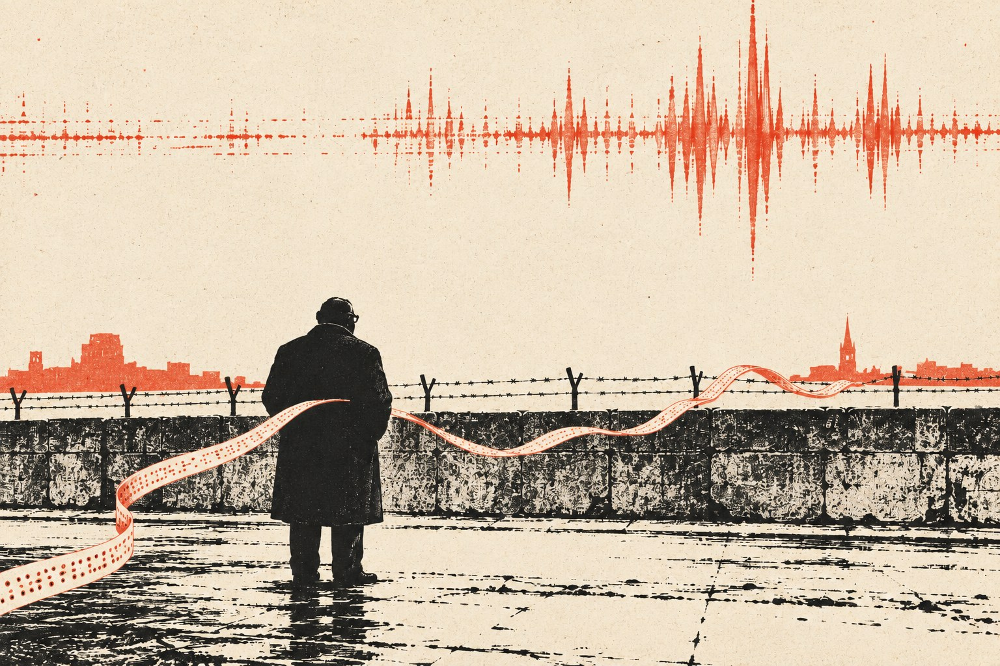

Помехи

В беде большой, в нужде лихой
Срединный путь — путь гробовой.— Фридрих фон Логау, «Срединный путь», 1654
Глава первая
Сержант Доуз прослужил в Рейндалене неделю и за эту неделю успел возненавидеть три вещи: здешнюю тишину, здешние часы и здешний подвал.
Тишина была особенная, штабная. В Берлине, откуда его перевели в последний день октября, тишины не бывало вовсе: там всё лето что-то случалось, и даже когда ничего не случалось, телетайпы стучали так, будто случилось. Город стоял внутри чужой страны, как кусок сыра в мышеловке, и все, от бригадира до последнего телеграфиста, жили с ощущением, что пружина может сорваться в любую минуту. Здесь, в Рейндалене, пружин не было. Здесь были красные кирпичные корпуса, улицы с названиями английских графств, газоны, которые подстригали даже в ноябре, и офицерские жёны, которые ходили в военторг за чаем и мармеладом с таким видом, словно Германия была недоразумением, временно отделявшим их от Суррея.
Часы висели в первом зале узла связи над окошком выдачи, большие, круглые, по Гринвичу, и шли на час позади всего остального. Доуз знал, что так положено, и в Берлине над его столом висели такие же, но там на них некогда было смотреть, а здесь он ловил себя на том, что поднимает глаза каждые пять минут.
А подвал был подвалом мёртвого человека. Сержант Гилкрист устроил здесь всё, от порядка, в котором раскладывались чистые бланки, до правила, по которому каждый адресат получал свой пересказ телеграммы и ни один не получал её слово в слово. Доуз и Гилкрист когда-то вместе учились на курсах, а потом не виделись ни разу и знали друг друга только по служебной линии между Берлином и Рейндаленом, по коротким фразам в конце смены, а с прошлого лета ещё и по шахматам: партию Гилкрист предложил в первую же неделю на новом месте, по ходу за смену, клеткой и фигурой, без лишних слов. Партия осталась недоигранной. Последний ход Гилкрист прислал в конце августа, и это был хороший, тихий ход ладьёй, над которым Доуз думал несколько смен, а пятого сентября узнал от рейндаленского ефрейтора, что отвечать некому.
Теперь он сидел за столом Гилкриста, пользовался его карандашами и, когда никто не видел, открывал ящик, где под стопкой инструкций лежала картонка с шахматной позицией, нарисованной аккуратным почерком человека, который пишет так, будто каждое слово стоит ему шиллинг. Доуз не знал, зачем держит её там, но и убрать не мог.
⁂
В понедельник шестого ноября, в половине одиннадцатого утра, часовой у стальной двери позвонил вниз и сказал, что пришёл мистер Ройс и с ним ещё один джентльмен.
Мистера Ройса Доуз уже знал. Тот приезжал из Кёльна в прошлую среду, сидел у капитана Певерелла два часа, потом спустился в подвал, пожал всем руки, как пожимают руки родственникам покойного, и сказал мягким больничным голосом, что дело, по существу, закончено и что ребята держались молодцами. Ребята смотрели в пол. Штаб-сержант Крофт, их начальник смены, уже неделю сидел на гауптвахте у военной полиции, и никто из них ещё не решил, что чувствует: стыд за то, что служил под ним, облегчение, что всё кончилось, или что-то третье, для чего у солдата нет слова.
Второй джентльмен оказался невысоким полноватым немолодым человеком в толстых очках и в тёмном пальто, очень хорошем и очень плохо сидящем, словно его покупала жена, а носил кто-то другой. Он остановился на пороге первого зала и некоторое время рассматривал телетайпы так, как рассматривают в музее мебель чужой эпохи: вежливо и без особой надежды понять, зачем она такая.
— Мистер Смайли, — сказал Ройс. — Из министерства.
Из какого министерства, он не сказал, и Доуз не спросил. В Берлине он видел достаточно людей «из министерства», чтобы знать: если министерство не называют, значит, его лучше не называть. Обычно такие люди были высокие, загорелые, с хорошими зубами и манерой говорить с сержантами по-свойски, как говорят с толковым шофёром. Этот был другой породы. Он поздоровался с Доузом за руку, рука у него была сухая и тёплая, и сказал, что очень сожалеет о сержанте Гилкристе.
Доуз ответил, что они все сожалеют.
— Да, — сказал мистер Смайли. — Но вы, кажется, были с ним знакомы ближе остальных. Вы ведь играли с ним в шахматы.
Доуз почувствовал, как у него краснеют уши. Шахматы по служебной линии были нарушением, мелким, никому не мешавшим, но нарушением, и знать о них могли только в двух подвалах: в берлинском и в этом.
— Это было в нерабочее время, сэр. В конце смены.
— Разумеется, — сказал мистер Смайли таким тоном, будто речь шла о вещи совершенно естественной, вроде чаепития. — Я спрашиваю не поэтому. Мне хотелось бы посмотреть журналы смены за июль, август и сентябрь. И контрольные экземпляры пересказов за те же месяцы, если они сохранились.
— Они у мистера Ройса, сэр. Все, что относятся к делу.
— Те, что относятся к делу, у мистера Ройса, — согласился Смайли. — А мне бы хотелось посмотреть все.
Ройс смотрел в сторону с выражением человека, которому неловко за гостя, но который уже понял, что спорить с гостем бесполезно.
⁂
Журналы хранились в железном шкафу во втором зале, куда телеграфистов не пускали. Доуз отпер шкаф, вынул двенадцать толстых книг в серых коленкоровых переплётах и стопку картонных папок с контрольными экземплярами и сложил всё на столе Гилкриста, потому что другого свободного стола не было. Мистер Смайли снял пальто, повесил его на спинку стула, сел и некоторое время протирал очки широким концом галстука. Потом надел их и открыл первый журнал на первой странице, на первом июля, хотя дело Крофта, насколько знал Доуз, начиналось гораздо позже.
Ройс постоял рядом, посмотрел на свои часы и сказал, что будет у капитана Певерелла.
Доуз вернулся к работе. Работы было много: Берлин после октябрьских танков всё ещё нервничал, и каждый день по линии шли графики колонн, списки грузов, запросы о пропусках, которые следовало зашифровать, расшифровать, пересказать и разнести. Двое шифровальщиков из старой смены Крофта стояли теперь двойные смены, потому что людей не хватало, и один из них, рядовой Морс, тот самый ефрейтор, который пятого сентября первым позвонил в Берлин из-за пропавшего рулона, а в октябре лишился лычки, спал по четыре часа на раскладушке в коридоре подвала. Раскладушка была видна через открытую дверь от стола Гилкриста. Доуз заметил, что мистер Смайли, перевернув очередную страницу, поднял глаза и некоторое время смотрел на неё, на серое армейское одеяло и на сапоги, поставленные рядом носками к стене. Потом снова опустил глаза в журнал и ничего не спросил.
Читал он медленно, и Доуз, который сам читал журналы быстро, по диагонали, как читают все, кто пишет их каждый день, сначала раздражался этой медлительностью, потом заинтересовался ею. Мистер Смайли читал не записи о телеграммах, он читал почерки. Он подолгу задерживался на страницах, где одна смена сдавала другой, и Доуз видел, как он сравнивает: ровные строчки Гилкриста, размашистые, с завитушками штабных оборотов строчки Крофта, круглые буквы дежурных телеграфистов, мелкий наклонный почерк ефрейтора, который потом стал рядовым. Иногда мистер Смайли что-то записывал в маленький чёрный блокнот, тоже медленно, тоже аккуратно, и тогда его губы чуть шевелились, словно он проговаривал про себя то, что пишет.
В час дня Доуз спросил, не принести ли ему сандвичей из сержантской столовой. Мистер Смайли поблагодарил и сказал, что будет очень признателен, и, когда Доуз вернулся с тарелкой, накрытой салфеткой, и кружкой чая, оказалось, что гость за это время не прочитал ни одной новой страницы. Он сидел, откинувшись на стуле, и смотрел на картонку с шахматной позицией, которая лежала перед ним на столе.
Доуз остановился. Он был совершенно уверен, что картонка лежала в ящике под инструкциями.
— Простите, — сказал мистер Смайли, не оборачиваясь. — Мне понадобилась скрепка, и я позволил себе открыть ящик. Это ведь его почерк?
— Его, сэр.
— Чей был ход?
Доуз поставил тарелку и кружку на край стола. Он подумал, что можно ответить по-разному, и что любой из ответов будет правдой, и что этот человек, по-видимому, умеет задавать вопросы, на которые есть только правдивые ответы.
— Мой, сэр. Он пошёл ладьёй первого сентября. Вечером, перед тем как уйти из подвала.
— Хороший ход?
— Очень хороший, сэр. Тихий. Сразу его не видно.
Мистер Смайли кивнул, словно услышал именно то, что ожидал.
— Он ведь был человек очень аккуратный? — сказал он. — Не любил сюрпризов. Не пил, насколько я понимаю, лет пятнадцать.
— Не пил, сэр.
— А в кармане у него нашли фляжку с виски. Почти пустую.
В подвале было тихо, только в первом зале стучали телетайпы. Доуз ничего не ответил. Он не знал, что сказать. Он сам думал об этой фляжке каждый день, с тех пор как ему рассказали, и каждый день приходил к одному и тому же, к тому, к чему, говорят, пришла в конце концов и военная полиция, но мысль от этого не становилась легче.
— Простите, — сказал мистер Смайли и впервые за всё это время повернулся к нему. Глаза за толстыми стёклами оказались усталыми и неожиданно добрыми. — Я спрашиваю не для протокола. Убийство сержанта Гилкриста не моё дело, им занимаются другие люди, и, насколько я знаю, занимаются хорошо. Мне просто хотелось понять, каким он был. Мне кажется, мы с ним делали похожую работу.
Он снова повернулся к журналу, взял сандвич, откусил, аккуратно положил обратно на тарелку и перевернул страницу. Доуз постоял ещё немного, потом пошёл в первый зал, где Хобсон махал ему рукой из-за телетайпа, потому что из Берлина пришла срочная.
Вечером, сдав смену, он вернулся во второй зал за своей фуражкой. Мистер Смайли уже ушёл. Журналы лежали на столе стопкой, ровно, как он их принёс, и в каждом торчали узкие бумажные закладки. Картонка с позицией лежала сверху. На полях, под последним ходом Гилкриста, мелким незнакомым почерком был записан ответ, ход конём.
Доуз долго смотрел на эту запись. Потом сел и, ничего не трогая, разобрал позицию в уме. Ход был плохой. После него Гилкрист выигрывал качество в три хода.
Он так и не понял, ошибся ли гость или сделал этот ход нарочно, чтобы мёртвый сержант выиграл. Картонку он убрал обратно в ящик, под инструкции, и больше её не доставал.
Глава вторая
За три дня до того, в пятницу третьего ноября, в половине пятого, когда над Кембридж-сёркус уже горели фонари, Контроль пригласил Смайли к себе на чай.
Приглашение было передано устно, через одну из мамочек, как в Цирке называли пожилых секретарш верхнего этажа, женщин в твидовых юбках и с жемчугом, которые знали о службе больше, чем иной начальник отдела, и никогда не говорили об этом вслух. Мамочка заглянула в кабинет Смайли, сказала, что Контроль будет рад, если мистер Смайли найдёт время, и исчезла раньше, чем он успел ответить. Найти время следовало немедленно, и это в Цирке понимали все.
Кабинет Контроля помещался на самом верху, под крышей, и попасть в него можно было только по узкой лестнице, мимо двух дверей, за одной из которых сидели те же мамочки, а за другой никто не сидел. В кабинете всегда было холодно. Контроль считал, что тепло размягчает мозги, и держал у ног маленький электрический камин, который грел только его собственные колени. Гостям оставалось греться чаем. Чай подавали в тонких фарфоровых чашках, из которых Контроль, по слухам, пил ещё до войны, и к нему полагались сухие бисквиты, которые никто, кроме хозяина, не ел.
Контроль был стар. Смайли знал его больше двадцати лет и не мог бы сказать, когда именно тот постарел: казалось, Контроль был старым всегда, с тех пор как появился, и старость была у него не возрастом, а чем-то вроде звания, которое ему присвоили раньше прочих. Он был худ, сух, носил костюмы, купленные, видимо, тогда же, когда чашки, и разговаривал так, словно каждое слово отпускал со склада под расписку.
— Садитесь, Джордж, — сказал он. — Как Энн?
— Благодарю вас, хорошо.
— Хорошо, — повторил Контроль и некоторое время помолчал, разглядывая Смайли поверх чашки с выражением, которое можно было принять за сочувствие, а можно было и за простое любопытство натуралиста. Энн в эту осень жила в Корнуолле у родственников, и Контроль, разумеется, это знал. Иногда Смайли казалось, что он спрашивает об Энн только затем, чтобы проверить, научился ли Смайли наконец врать о ней без паузы.
⁂
На столе между ними лежала папка. Обыкновенная серая папка с белым ярлыком, и на ярлыке не было ничего, кроме номера. Контроль подвинул её к Смайли кончиком пальца, как отодвигают тарелку с едой, которая не понравилась.
В папке был список. Восемь фамилий, точнее, восемь кличек, напечатанных на машинке в столбик, и против каждой дата, а против некоторых ещё и короткое слово. Арестован. Арестована. Не вышел на связь. Арестован. Самое короткое из слов стояло против последней клички, и датировано оно было вчерашним днём.
Смайли знал эти клички. Он знал их не так, как знают людей, а так, как знают корешки книг на полке, которые давно не снимал: по цвету, по месту, по тому, что когда-то, много лет назад, держал их в руках. Сеть в Восточной Германии строили долго и строили хорошо, с той британской неторопливостью, которую американские кузены считали ленью, а сами британцы предпочитали называть основательностью. Сеть пережила восстание пятьдесят третьего года, пережила две большие чистки и одного предателя, которого вовремя вычислили и вывели. Стену она не пережила. С тринадцатого августа, когда за одну ночь Берлин разрезали проволокой пополам, люди начали пропадать один за другим, без видимого порядка, и в Цирке сначала говорили о невезении, потом о небрежности, а теперь, в ноябре, не говорили вслух ничего, потому что вслух можно было сказать только одно слово, а это слово не произносят в коридорах.
Руководитель сети был пока жив и пока на той стороне. Его клички в списке не было. Смайли заметил это и ничего не сказал.
— Вы читали сводку из Рейндалена? — спросил Контроль.
— Читал.
Сводка пришла накануне, по обычной цепочке: из службы безопасности британских войск в Германии в Военное министерство, оттуда в контрразведку, оттуда, с припиской на полях, в Цирк. В понедельник тридцатого октября, в шесть утра, военная полиция арестовала в Рейндалене, в штабе Рейнской армии, штаб-сержанта Королевского корпуса связи Леонарда Крофта, начальника смены в узле связи. Крофт с весны продавал восточным немцам пересказы телеграмм, проходивших через узел. Платили ему долгами: какой-то любезный человек скупил его карточные расписки и потом простил их по частям. Передавал он бумаги через немку, машинистку из отдела перевозок, а та оставляла их на вокзале в Дюссельдорфе. Взяли его не по наводке и не по счастливой случайности, а потому, что один сержант из того же узла поставил ловушку, а потом один разжалованный ефрейтор нашёл, куда эта ловушка делась. Сержант к тому времени был мёртв. Его нашли в лесу, в пруду, и Крофт, по-видимому, имел к этому прямое отношение.
Сводка была написана хорошо, суше, чем пишут в армии, и Смайли, читая её, отметил про себя, что неизвестный ему мистер Ройс, подписавший её, человек аккуратный и, видимо, умный. Ещё он отметил, что в сводке нет ни слова о том, что именно Крофт продавал, кроме общего «оперативной переписки гарнизона», и что приписка на полях, сделанная в контрразведке красными чернилами, гласила: «Вероятно, отсюда и берлинские потери?»
— Вероятно, — сказал Контроль, глядя в окно, за которым ничего не было видно, кроме собственного отражения. — Красиво, правда? Вероятно. Один предатель, одна немка, один вокзальный буфет. Всё в армии, всё у кузенов на глазах и, главное, всё не у нас. Контрразведка будет счастлива. Министерство будет счастливо. Американцы, которые второй месяц спрашивают меня, что у нас течёт, будут почти счастливы.
— А вы?
Контроль медленно повернул голову.
— Я, Джордж, никогда не бываю счастлив. Это не входит в мои обязанности. Я хочу, чтобы вы туда съездили.
— В Рейндален?
— В Рейндален. Тихо, без шума, от министерства. Ройс вас встретит, я договорился. Посмотрите бумаги, поговорите с Крофтом, если он будет разговаривать. Если окажется, что берлинские люди погибли из-за этой лавочки, напишите об этом, и мы закроем папку.
— А если не окажется?
Контроль долго не отвечал. Он взял с тарелки бисквит, разломил его, съел половину, а вторую положил обратно, и Смайли, который знал его давно, понял, что ответа не будет, но будет что-то вместо ответа.
— У нас сейчас идёт одна вещь, — сказал наконец Контроль. — Вы о ней знаете. Она важнее восьми человек в этом списке, Джордж, как это ни печально. Она важнее и девятого, и десятого, если они появятся. Ради неё мне нужно, чтобы в Цирке было тихо. Чтобы никто не ходил по коридорам и не искал под половицами. Чтобы папка была закрыта. Вы меня понимаете?
— Понимаю.
— Я не прошу вас писать неправду. Я прошу вас поехать и посмотреть. Вы хорошо смотрите. Лучше, чем все мы. — Контроль снова повернулся к окну. — А что написать, вы решите сами. Вы всегда решаете сами, это ваш главный недостаток. Допивайте чай.
⁂
Смайли вышел из Цирка в начале седьмого. Шёл мелкий дождь, такой, какой бывает в Лондоне только в ноябре: он не падал, а висел в воздухе и оседал на пальто тонкой серой пылью. Смайли дошёл пешком до Пикадилли, потом передумал брать такси и пошёл дальше, через Грин-парк, по мокрым дорожкам, мимо мокрых скамеек, на которых никто не сидел.
Он думал о списке. Не о людях в нём, о людях он запретил себе думать ещё в кабинете, а о самом списке, о его форме. Восемь кличек, восемь дат. Если бы сеть выдал один человек, который знал её целиком, аресты шли бы иначе: разом, в одну ночь, как это любят делать немцы с той стороны, у которых, как у всякой молодой полиции, слабость к большим ночным облавам. Если бы её выдавали по частям, по мере того как предатель узнавал очередное имя, аресты шли бы медленно, с разрывами, и в разрывах было бы видно, что он узнал и когда. Здесь не было ни того ни другого. Здесь аресты шли так, словно кто-то наверху, по ту сторону, получил всё сразу, но решил тратить не торопясь, чтобы не спугнуть остальных и не выдать собственный источник. Так поступают не с купленными бумагами. Так поступают с подарком, который боятся потерять.
Мог ли штаб-сержант из армейского подвала сделать такой подарок? Смайли не знал. Он знал только, что очень хотел бы, чтобы мог.
Дома, на Байуотер-стрит, было темно и холодно, в прихожей лежали письма, ни одного от Энн. Смайли разжёг камин, поставил чайник и, пока тот грелся, снял с полки маленький томик немецких эпиграмм семнадцатого века, купленный когда-то в Оксфорде у букиниста за шесть пенсов. Открыл наугад. Читать не стал, только подержал в руках. Потом поставил книгу на место, налил себе чаю, сел к огню и долго сидел так, не двигаясь, как сидят люди, которые давно уже приняли решение и теперь только ждут, когда наберутся сил его исполнить.
Глава третья
Мистер Ройс поселил его в гостевой комнате при офицерском собрании, в конце длинного коридора, пахнувшего мастикой и вчерашней капустой. В комнате были кровать, умывальник, гравюра с видом Виндзорского замка и письменный стол, слишком маленький для дела, которое Ройс привёз из Кёльна в двух картонных коробках. Смайли разложил бумаги на кровати, на столе и на полу, снял пиджак, надел кардиган, который Энн когда-то назвала оскорблением для шерсти, и сел читать.
Дело было составлено хорошо. Ройс принадлежал к той редкой породе следователей, которые записывают не только то, что им говорят, но и то, как им это говорят, и делают это без всякого желания показаться умнее допрашиваемого. Его протоколы читались как неторопливые письма от человека, который всё видел и ничего не хочет добавить от себя. Смайли читал их в том порядке, в каком они были написаны, и лето шестьдесят первого года проходило перед ним не так, как оно прошло в действительности, а так, как его постепенно узнавал Ройс: кусками, с опозданием, с ложными поворотами, которые потом приходилось вычёркивать.
⁂
В начале июля через узел связи прошла телеграмма о том, сколько вагонов нужно, чтобы берлинский гарнизон продержался, если дорогу перекроют. Цифра была некруглая. Через две недели армейская разведка прислала в штаб перевод передачи восточногерманского радио, где комментатор, посмеиваясь, рассказывал слушателям, как британцы трясутся за свой гарнизон, и называл эту самую некруглую цифру.
Сержант Гилкрист тогда никому ничего не сказал. Он сделал другое, и Смайли, дойдя до этого места в показаниях капитана Певерелла и шифровальщиков, отложил бумагу и некоторое время сидел неподвижно. Правило, по которому каждый адресат получал свой пересказ, Гилкрист завёл давно, ещё в прошлом году, и молодым объяснял его коротко: шифр ломают дураки на нашей стороне. С середины июля он стал соблюдать его строже прежнего: смысл тот же, слова и порядок другие, и ни одного одинакового пересказа на два адреса.
Это был старый приём, и Смайли знал его очень хорошо. Когда подозреваешь, что из дома течёт, а дом большой и людей в нём много, каждому даёшь чуть-чуть разное, а потом слушаешь, какая версия вернётся с той стороны. Приём этот изобретали, вероятно, столько же раз, сколько на свете было подозрительных людей с хорошей памятью, и Цирк не владел им, как не владеют погодой. Но Смайли не помнил случая, чтобы его изобрёл в одиночку сержант связи, не прочитавший, судя по всему, ни одной книги о шпионах и знавший по-немецки одно слово «данке».
Во второй половине августа, когда в Берлине уже стояла проволока, восточное радио назвало ещё одну вещь, которую знать не полагалось: приказ берлинским патрулям не подходить к проволоке ближе ста ярдов. Двадцать девятого августа из Берлина пришёл график британских колонн по автобану. Во втором пункте графика стояло, что первая колонна подходит к контрольно-пропускному пункту в девять сорок. Гилкрист написал четыре пересказа. В трёх, ушедших наверх, в оперативный отдел, в отдел перевозок и квартирмейстеру полка, стояло девять сорок. В четвёртом, контрольном, который оставался в узле и подшивался в журнал, он написал девять сорок пять.
Тридцать первого августа, вечером, восточногерманское радио сообщило, что британская колонна подойдёт к пункту в девять сорок пять.
Смайли снял очки, протёр их, надел снова и перечитал эту страницу ещё раз. Он почувствовал то, что чувствовал всегда, когда в чужой работе находил вещь, сделанную безупречно: короткое, почти физическое удовольствие и сразу за ним стыд, потому что удовольствие это было, по сути, удовольствием ремесленника, а человек, который это сделал, лежал теперь в земле.
Дальше было то, что Ройс восстановил уже потом. В пятницу первого сентября, около восьми вечера, Гилкрист по служебной линии спросил берлинского сержанта Доуза, какое время стоит в оригинале графика. Доуз ответил: девять сорок. Гилкрист оторвал кусок телетайпной ленты с ответом, сложил его и положил в нагрудный карман. В девять, уже сдав смену, он надел штатский пиджак и сказал часовому у двери, что пойдёт прогуляться. В лесу, у прудов, у него был разговор с Крофтом. Что было сказано, известно только со слов Крофта, а Крофт, если верить его последним показаниям, сказал правду не сразу и не всю. По его словам, Гилкрист дал ему время до понедельника, чтобы тот сам пошёл к мистеру Ройсу.
В воскресенье в семь утра немец, гулявший с таксой, нашёл Гилкриста в пруду, лицом вниз, там, где воды было по колено.
⁂
Около полуночи Смайли спустился вниз, в пустую курительную, где дежурный стюард, пожилой валлиец, принёс ему без всякой просьбы чашку какао и печенье. Какао было приторное, и Смайли выпил его до дна. Потом вернулся в комнату и взялся за вторую коробку.
Во второй коробке были показания ефрейтора Морса.
Их было много, больше, чем чьих-либо ещё, и они не делали ефрейтору чести, если читать их подряд, и делали очень большую, если читать их так, как читал Ройс. Пятого сентября ефрейтор обнаружил, что из узла пропал рулон служебного телетайпа за первое число, и сам, никого не спросив, связался с Берлином. Восьмого он назвал Ройсу виновную: уборщицу, фрау Кесслер, которая в субботу выносила из узла мешки на сожжение. Одиннадцатого немецкая полиция обыскала дом уборщицы, двенадцатого её уволили. Четырнадцатого ефрейтор, стоя у печи во дворе, узнал от капрала, что мешки в ту субботу были опломбированы до того, как фрау Кесслер их взяла, и, значит, она ничего не могла из них вынуть. Шестнадцатого он пошёл к ней извиняться. Восемнадцатого пришёл к Ройсу и сказал, что ошибся.
Смайли прочёл последний протокол дважды. Ройс записал слова ефрейтора без комментариев, но с одной пометкой на полях карандашом: «Пришёл сам». Ниже, тем же карандашом, но, видимо, позже: «Не оправдывался».
Дальше ефрейтор ошибся ещё раз, шестого октября, и опять громко: обвинил квартирмейстера полка, у которого нашлось алиби и двадцать два свидетеля. Девятого командир полка снял с него лычку. А двадцать восьмого, подшивая журналы, разжалованный ефрейтор, теперь рядовой, увидел, что контрольный лист номер три тысячи восемьсот семьдесят один подшит между листами три тысячи шестьсот девяносто пять и три тысячи шестьсот девяносто шесть. Почерк на листе был Гилкриста. Только Гилкрист, как выяснил на следующий день квартирмейстер по своей книге выдачи, получил блокнот с этими номерами первого сентября в два часа дня и, значит, не мог исписать из него лист, который по журналу числился раньше. Лист был подделан. Подделать его мог только тот, кто принимал смену после Гилкриста.
В личном деле, приложенном к показаниям, было немного. Морс Э., рядовой, бывший ефрейтор, холост. Оксфорд, без степени. Курсы шифровальщиков в Каттерике, один из четырёх окончивших из семнадцати поступивших. Взысканий до октября не имел. Не пьёт. В графе «интересы», которую заполняют для порядка и которую никто не читает, рукой какого-то давнего писаря было выведено: «музыка (опера)».
Смайли закрыл папку и некоторое время сидел, положив на неё ладонь, как кладут ладонь на голову собаке.
Он думал о том, что Цирк, вероятно, дорого дал бы за такого человека: за упрямство, которое не отпускает нестыковку, за память на номера и почерки, за то, что человек дважды ошибся вслух и дважды вслух признал ошибку. И ещё думал о том, что Цирк сделал бы с ним за пять лет. Научил бы ошибаться молча. Научил бы не ходить извиняться к уборщицам. Научил бы, что признание ошибки есть роскошь, которую служба оплачивает только своим старшим офицерам, и то не всем.
У него было имя этого рядового, и было основание вызвать его хоть завтра: свидетель, первым нашедший пропажу рулона, первым разговаривавший с Берлином. Он никого не вызвал. Он записал в чёрный блокнот фамилию и одно слово рядом с ней, слово было «Оксфорд», и больше в этот блокнот в связи с этой фамилией не записывал ничего.
⁂
Оставалось то, ради чего он приехал.
Под утро, когда за окном посерело и где-то в конце коридора загремели вёдрами, Смайли сложил на полу два ряда бумажек. В первом ряду, слева, лежали даты того, что продавал Крофт: всё, что Ройс сумел установить по показаниям Крофта, немки и по передачам восточного радио. Вагоны для гарнизона. Сто ярдов. График колонн. Ещё несколько телеграмм о перевозках, о пропусках, о складах. Всё это была переписка армии, и только армии: через подвал в Рейндалене шло то, что гарнизон писал штабу и штаб гарнизону, и не шло ничего из того, что писал своим людям Цирк. У Цирка были свои каналы, свои шифры, свои люди на линиях, и ни один из них не проходил через стальную дверь с глазком.
Во втором ряду, справа, лежали восемь кличек из лондонского списка, каждая со своей датой.
Связь Крофта с немкой, если верить обоим, прервалась второго сентября: Крофт не пришёл на встречу и вернулся к ней только через две недели, со ссадиной на руке и рассказом о том, что чинил машину. Между вторым и шестнадцатым сентября он не передал на ту сторону ни строчки.
Третья кличка из лондонского списка была арестована девятого сентября. Четвёртая не вышла на связь двенадцатого.
Смайли долго смотрел на эти два ряда, на пустое место в левом и на две бумажки в правом, стоявшие против этого пустого места. Потом очень аккуратно, по одной, собрал их, сложил в чёрный блокнот и пошёл умываться.
Глава четвёртая
Гауптвахта военной полиции стояла на краю городка, за спортивным полем, и была выстроена из того же красного кирпича, что и всё остальное в Рейндалене, так что снаружи её можно было принять за почту или за небольшую школу. Внутри она пахла хлоркой, ружейным маслом и сырой шинелью. Капрал в красной фуражке проверил у Смайли пропуск, проверил его ещё раз, позвонил куда-то, выслушал, сказал «да, сэр» трижды разными голосами и только после этого повёл гостя по коридору.
Комната для допросов была маленькая, с зарешёченным окном под потолком, столом, двумя стульями и пепельницей, прикрученной к столу шурупом. Штаб-сержант Крофт уже сидел за столом. При виде Смайли он поднялся, по привычке одёрнул китель, которого на нём не было, и улыбнулся. Улыбка у него оказалась широкая, с золотым зубом сбоку, и совершенно не подходила ни к месту, ни к положению. Это была улыбка человека, который двадцать лет входил в любую комнату первым, хлопал всех по плечу и говорил «ну что, мальчики», и улыбку эту нельзя было снять, как ремень и шнурки, которые у него отобрали.
— Садитесь, сержант, — сказал Смайли.
— Штаб-сержант, сэр. — Крофт сел. — Пока ещё. Хотя, говорят, это ненадолго.
Он был большой, румяный, с крупными руками, которые не знали, куда себя деть, и всё время то ложились на стол, то сползали на колени. Смайли представился, назвал министерство, не называя его, и сказал, что задаст несколько вопросов, которые, вероятно, покажутся сержанту странными.
— Насчёт Тома? — сказал Крофт, и улыбка на мгновение пропала. — Я мистеру Ройсу всё сказал. Я его толкнул. Я не хотел. Он упал, и я подумал, что он встанет. А он не встал. Виски я потом принёс, это да. Это я сказал. Ленту сжёг. Это тоже сказал.
— Я не о сержанте Гилкристе, — сказал Смайли. — Об этом вас будут спрашивать другие люди, и, вероятно, ещё не раз. Меня интересует ваш немецкий знакомый.
Крофт посмотрел на него с недоверием, а потом, как показалось Смайли, с облегчением, таким явным и таким детским, что на него неловко было смотреть.
⁂
О человеке в хорошем пальто Крофт рассказывал охотно и много, как рассказывают о старом приятеле, с которым вышла неприятность. Познакомились весной, в один из тех редких дней, когда Крофт выбрался в город: в ресторане при вокзале в Мёнхенгладбахе к нему подсел вежливый человек и заговорил по-английски. Человек был немолодой, вежливый, хорошо говорил по-английски, только «р» у него выходило мягко, по-иностранному. Звали его, по его словам, Вальтер. Однажды он сказал, что у сержанта, кажется, неприятности с карточными долгами в гарнизоне, и что у него, Вальтера, есть друзья, которые готовы помочь. Потом оказалось, что друзья уже помогли: расписки Крофта, все до одной, лежали у Вальтера в бумажнике, и Вальтер разорвал одну прямо за столом, как фокусник, а остальные обещал рвать постепенно.
— А что он просил взамен? — спросил Смайли.
— Сначала ничего. Потом немножко. Как у вас там, говорит, наверху, всё в порядке? Не скучно? Много работы? Я ему расскажу что-нибудь, он слушает, кивает. Потом говорит: а нельзя ли поподробнее? Потом: а нельзя ли на бумажке? — Крофт развёл большими руками. — Сами знаете, сэр, как это бывает.
— Знаю, — сказал Смайли. — Что именно он просил на бумажке?
Крофт стал перечислять, и Смайли слушал, не перебивая и ничего не записывая. Перевозки. Пропуска. Сколько машин, сколько вагонов, когда колонна. Что пишет Берлин о проволоке. Что пишет штаб Берлину о проволоке. Он слушал не то, что Крофт называл, а то, чего Крофт не называл, и ждал, назовёт ли.
— А о людях он спрашивал? — сказал он наконец. — Не о солдатах. О штатских. Кто приезжает из Лондона, кто ездит в Берлин, у кого какие фамилии в телеграммах?
— О штатских? — Крофт удивился искренне. — Нет, сэр. Зачем ему штатские? Он про армию спрашивал. Он, знаете, был такой, как бухгалтер. Ему нужны были цифры, даты, номера частей. Я ему раз сказал про одного майора из штаба, что тот, мол, пьёт, так он даже не записал. Сказал: это нам неинтересно, Лео, это вы для себя оставьте.
— Через ваш узел шла какая-нибудь переписка, которая не была армейской? Шифровки, которые вы не могли прочитать? Телеграммы с пометками, которых вы не понимали?
— Бывало, — сказал Крофт. — Раз в месяц, может, чаще. Приходили группы армейской разведки, их у нас не расшифровывали, отдавали в запечатанном конверте офицеру, который за ними приходил. Сам приходил, в штатском. Мы их не видели, сэр. Ни я, ни Том, никто. Конверт и подпись в книге, и всё.
— И Вальтер о них спрашивал?
— Нет, сэр. — Крофт подумал. — Ни разу. Я, по правде сказать, раз сам ему сказал, хотел похвастаться, что у нас, мол, и такое бывает, секретное. Думал, он заплатит больше. А он только посмотрел на меня, знаете, так. И сказал, что это его не касается.
Смайли кивнул. Это было именно то, что он ожидал услышать, и легче ему от этого не стало.
⁂
Оставался ещё один вопрос, и Смайли задал его, когда Крофт уже решил, что разговор кончен, и снова начал улыбаться.
— Второго сентября вы не пришли на встречу с фройляйн Брандт. Вы вернулись к ней через две недели. Что сказал Вальтер, когда вы вернулись? Был он недоволен?
Крофт помолчал. Руки его снова поползли со стола на колени.
— Нет, сэр. Не был. Я думал, будет. Я две недели думал, что они меня бросят или, хуже того, что пойдут куда надо и всё про меня расскажут. А он ничего. Встретил меня, как будто вчера виделись. Спросил, как машина. Я сказал, что чинил машину. — Крофт криво усмехнулся. — Он сказал: ничего страшного, Лео, у нас сейчас и без вас всего хватает.
— Так и сказал? Всего хватает?
— Так и сказал, сэр. Я тогда подумал, что это он про проволоку, что у них там, на той стороне, своих забот хватает. А что?
— Ничего, — сказал Смайли. — Благодарю вас, штаб-сержант.
Он встал, и Крофт тоже встал, по привычке, и оказался на голову выше гостя и вдвое шире, и на мгновение в маленькой комнате с решёткой под потолком стало тесно, как в лифте. Крофт посмотрел на дверь, за которой ждал капрал, потом на Смайли.
— Сэр, — сказал он тихо, без улыбки. — Можно спросить? Моя жена. Она хотела домой, в Англию. Говорила, что соскучилась по дождю. Меня в декабре отпускали инструктором в Каттерик. Как вы думаете, их теперь отпустят домой? Без меня?
Смайли сказал, что, вероятно, отпустят, и что он, если сержант позволит, наведёт справки. Он не знал, правда ли это. Он знал только, что большие люди, которые совершили большую подлость, почти всегда в конце концов спрашивают о жене, и что ответа на этот вопрос у них никогда нет, и что он сам, Джордж Смайли, никогда бы не смог спросить ни у кого о своей.
Уже в коридоре он услышал, как за дверью Крофт начал напевать. Что-то из старой музыкальной комедии, весёлое, с подпрыгивающим ритмом, мелодию, которую Смайли знал и никак не мог вспомнить, откуда.
⁂
Вечером, в гостевой комнате, он достал из блокнота две бумажки и положил их на стол рядом. Девятое сентября. Двенадцатое сентября. Потом добавил к ним третью, на которой своим мелким почерком записал: «Всего хватает».
В те две недели, когда купленный армейский сержант молчал, люди на той стороне продолжали гибнуть, и человек, который этого сержанта купил, не беспокоился о нём, потому что у него было всего вдоволь. Только не от Крофта, а от кого-то другого, кто знал не про вагоны и колонны, а про людей, и кто, по-видимому, не пропускал встреч.
Смайли позвонил в Кёльн мистеру Ройсу и попросил устроить ему на завтра место в самолёте до Берлина.
Глава пятая
В Темпельхофе было холодно и пусто, как бывает на больших вокзалах в часы, когда поезда уже ушли, а новые ещё не назначены. Огромное полукруглое здание, построенное, чтобы встречать толпы, встречало два десятка пассажиров утреннего рейса с запада: несколько американских офицеров в шинелях, коммивояжёров с образцами, двух пожилых немок с корзинками и невысокого англичанина в очках, у которого не было с собой ничего, кроме портфеля.
В такси Смайли попросил ехать не прямо, а через Фридрихштрассе. Шофёр, седой берлинец с усами, посмотрел на него в зеркало, пожал плечами и поехал. Минут через двадцать он остановил машину на углу, за сотню шагов до того места, где улица кончалась.
Кончалась она будкой американской военной полиции, мешками с песком, шлагбаумом и белой линией на асфальте. За линией начиналось другое государство. Меньше двух недель назад на этом самом месте, нос к носу, через белую линию, стояли американские и советские танки, и весь мир сутки не знал, кто из них первым двинется с места. Теперь танки ушли, и улица выглядела почти обыкновенно, только слишком тихо для середины дня. Дальше, за шлагбаумом, поперёк улицы лежали серые бетонные блоки, неровные, наспех поставленные, с колючей проволокой поверху, и за ними пустота, в которой ничего не двигалось.
— Вот, — сказал шофёр по-немецки, не оборачиваясь. — Смотрите, если вам интересно. Все приезжают смотреть.
Смайли смотрел. Он думал о том, что где-то там, за блоками, за пустотой, за следующими улицами, в квартирах с плохим отоплением и тонкими стенами, сидят люди, клички которых он видел на листе бумаги в кабинете Контроля, и те из них, кто ещё не арестован, вслушиваются по ночам в шаги на лестнице. И что он ничем, решительно ничем не может им помочь, а может только понять, кто их продал, и даже это, по всей вероятности, ему не позволят записать.
— Достаточно, — сказал он. — Благодарю вас. В Шарлоттенбург, пожалуйста.
⁂
Фриц Ноймайер жил на третьем этаже серого доходного дома, во дворе, в квартире из двух комнат, где пахло табаком, керосином и типографской краской, которая въелась в него за тридцать лет так, что не отмывалась никаким мылом. До тринадцатого августа он был одним из тех берлинцев, которые жили по одну сторону границы, а работали по другую: жил на западе, а работал на востоке, наборщиком в типографии недалеко от Александерплац, и каждое утро ездил через весь город на работу, а каждый вечер обратно. Таких в городе были тысячи, и, пока город был один, никто не считал это чем-то особенным.
Особенным это сделали англичане. Человек, который каждый день пересекает границу с обеденным судком и пропуском, является готовым курьером, и Ноймайер был им восемь лет, и восемь лет носил в судке, под бутербродами, то, что ему давали, и отдавал, кому говорили. Тринадцатого августа его типография оказалась в другом государстве, его работа тоже, и он сам в один день стал безработным и бесполезным.
Смайли он принял без удовольствия. Он сидел у окна, в жилете, курил короткую трубку и смотрел на гостя, как смотрят на страховых агентов.
— Опять, — сказал он. — Уже был один ваш. В сентябре. Спрашивал то же самое, я думаю. Записал. Уехал. Ничего не изменилось.
— Я постараюсь спросить другое, — сказал Смайли по-немецки, и Ноймайер, услышав его немецкий, медленный, правильный, чуть книжный, с южным выговором довоенного провинциального университета, впервые посмотрел на него внимательно.
— Вы где учились?
— Давно. В маленьком городе. Там теперь, наверное, всё по-другому.
— Всё по-другому, — согласился Ноймайер. Он вынул трубку изо рта. — Спрашивайте.
⁂
Смайли спросил о последнем месяце перед стеной, о том, что носил в судке Ноймайер в июле и в начале августа, и, как бы между прочим, о том, не было ли среди этого чего-нибудь необычного.
Ноймайер долго молчал. Потом встал, подошёл к буфету, достал бутылку шнапса и две рюмки, налил обе, одну поставил перед Смайли, другую выпил сам.
— Было, — сказал он. — Я так и сказал тому, первому. Он записал. В конце июля мне дали бумагу, которую я должен был разнести всем. Всем, понимаете? Не одному человеку, как обычно, а всем, по цепочке. Я восемь лет носил бумаги, и никогда никто не давал мне такую, которую надо было нести всем.
— Что в ней было?
— Я не читал. — Ноймайер посмотрел на него с вызовом. — Я никогда не читал. Но мне сказали, что в ней. Сказали, если город закроют, будет эвакуация. Чтобы каждый написал, где живёт сейчас, где работает, с кем живёт, какие у него документы, и чтобы ответ отдал мне до десятого августа. Чтобы, если что, знать, кого и откуда вывозить.
— И они ответили?
— Ответили. Не все. Из моей цепочки шестеро или семеро. Я собрал и отдал. — Ноймайер налил себе ещё. — А потом город закрыли, и никого не вывезли, и они начали пропадать. Сначала один, потом второй. Вы видели список? У вас должен быть список. Посмотрите, кто там первый.
Смайли помнил список наизусть. Он не сказал этого. Он сказал только:
— А те, кто не ответил?
— Те ещё там, — сказал Ноймайер. — Двое, я знаю. Один старый, осторожный, он сказал, что англичане и так знают, где он живёт, и что, если не знают, тем лучше. Второй, может, просто не успел.
— Кто дал вам эту бумагу?
— Ваш человек. Здешний. — Ноймайер махнул рукой куда-то в сторону запада. — Он сам был недоволен, я видел. Сказал: это не я придумал, это Лондон. Лондон хочет знать. Он так и сказал, два раза: Лондон хочет знать.
⁂
Вечером, в баре недалеко от Курфюрстендамма, где над стойкой горела зелёная лампа, а бармен понимал по-английски ровно столько, сколько нужно, Смайли встретился со здешним человеком.
Начальник берлинской резидентуры был усталым, плотным, коротко стриженным человеком под пятьдесят, с лицом, которое когда-то, вероятно, было открытым, а теперь стало просто обветренным. Он пил виски, не разбавляя, и Смайли заказал себе то же, чтобы не оставлять его пить одного. Они были знакомы давно, хотя и не близко, и оба знали, что сейчас разговаривают не как старые знакомые.
— Перепись? — сказал резидент. — Да. Пришла из Лондона в двадцатых числах июля. Я был против. Я написал, что был против. У меня есть копия, если хочешь посмотреть. Мне ответили, что решение принято наверху и что эвакуационный план без адресов не план, а поэзия. Это их слово, не моё. Поэзия.
— Кто ответил?
Резидент усмехнулся и сделал глоток.
— Ты знаешь, как там отвечают, Джордж. Никто не ответил. Ответ пришёл, а кто его написал, тебе не скажут. Визы, номера, «согласовано». Совместная работа. Тот, кто в Лондоне хочет, чтобы бумагу никто не подписал, может это устроить лучше, чем кто-либо ещё на свете.
— Ответы ты отправил в Лондон?
— Отправил. Нашим каналом, не армейским. Через армию у нас ничего не идёт, ты же знаешь. — Он посмотрел на Смайли с внезапным подозрением. — А что, кто-то думает, что армия?
— Кто-то хотел бы, чтобы армия, — сказал Смайли.
Резидент долго смотрел на него. Потом допил, поставил стакан и подозвал бармена.
— Если ты приехал сказать мне, что это сделал кто-то из наших, — сказал он тихо, — то скажи сразу. Я с августа не сплю. Я хочу знать.
— Я приехал не говорить, — ответил Смайли. — Я приехал слушать. Прости.
На обратном пути в гостиницу он велел шофёру ехать вдоль границы, и шофёр, другой, молодой, долго вёз его по тёмным улицам, где в домах на той стороне окна первых этажей были заложены кирпичом, а на этой стороне, на углах, стояли небольшие группки людей, которые ничего не делали, просто стояли и смотрели туда, через проволоку, как смотрят с берега на воду, в которой кто-то утонул.
Глава шестая
В Лондон он вернулся в пятницу вечером и в субботу утром, хотя по субботам в Цирке работали только дежурные и те, кому некуда было пойти, пришёл к себе в кабинет, сел за стол и начал писать черновик.
Черновик не шёл. Смайли писал хорошо, когда знал, что пишет, и очень плохо, когда не знал, и в этом отношении был похож на большинство людей, только, в отличие от большинства, понимал это про себя. К полудню у него было четыре страницы, на которых излагалось дело штаб-сержанта Крофта, ясно, подробно и без единой ошибки, и ни одной страницы о том, ради чего его посылали. Он перечитывал последнюю фразу, вычёркивал её, писал снова и снова вычёркивал. Фраза была одна и та же: «Сведения, которыми располагал штаб-сержант Крофт, не могли послужить причиной…»
В начале первого в дверь постучали, и, не дожидаясь ответа, вошёл Билл Хейдон.
⁂
Хейдон был единственным человеком в Цирке, который входил без стука и которого за это никто не упрекал. Он был высок, худ, небрежно элегантен в том особенном смысле, в каком бывают элегантны англичане из хороших семей, когда стараются выглядеть так, будто одевались в темноте. Пиджак у него был старый и прекрасный, локти протёрты, на манжете пятнышко краски: Хейдон писал маслом, и писал, говорили, недурно. Он был остроумен, обаятелен, нетерпелив, любим женщинами и подчинёнными, и о нём в Цирке говорили, что он мог бы стать кем угодно, министром, профессором, художником, а стал разведчиком только потому, что это показалось ему смешнее остального. Энн приходилась ему двоюродной сестрой. Смайли знал его больше двадцати лет и всё это время испытывал к нему смешанное чувство, в котором восхищения было больше, чем хотелось бы, а доверия меньше, чем следовало бы, и никогда не мог сказать, почему.
— Джордж, — сказал Хейдон, садясь на край стола и разглядывая черновик вверх ногами. — В субботу. Над бумагами. Ты меня пугаешь. Как Германия? Как наш доблестный штаб-сержант?
— Ты знаешь про Рейндален?
— Весь пятый этаж знает про Рейндален. — Хейдон взял со стола карандаш и стал его вертеть. — Контрразведка вчера обедала с кем-то из наших и рассказывала о нём, как рыболов рассказывает о форели. Армейский сержант, долги, немка с вокзала. Почти Диккенс. Ты, говорят, поехал туда закрывать папку.
— Говорят.
— А ты не закрываешь, — сказал Хейдон и посмотрел на него с той насмешливой нежностью, с какой смотрят на упрямого и немного смешного родственника. — Я вижу по лицу. У тебя лицо, Джордж, как у викария, который нашёл в церковной кружке пуговицу. Ну? Что не так с сержантом?
Смайли помолчал. Потом сказал, медленно, подбирая слова, о том, что через армейский узел не шла переписка Цирка. О двух неделях сентября, когда Крофт молчал, а аресты шли. О Ноймайере и о бумаге, которую тот разносил в судке. О переписи.
Хейдон слушал, не перебивая. Лицо у него было серьёзное и внимательное, и Смайли подумал, что так Хейдон слушает только тогда, когда разговор ему по-настоящему интересен.
— Перепись, — сказал Хейдон наконец. — Да, помню. Мы спорили о ней летом. Я был против, если тебе интересно. Говорил, что адреса агентов в одной бумаге хуже, чем бомба в портфеле. Меня не послушали. Было решено, что, если город закроют, надо знать, кого вывозить. — Он развёл руками. — Решение коллективное, бумага пошла с визами всех, кому положено. Половина пятого этажа к ней руку приложила.
— Ответы пришли в Лондон.
— Конечно, пришли. — Хейдон положил карандаш. — Джордж, послушай меня. Ответы пришли в Лондон, и с ними работали человек двенадцать, включая мамочек и шифровальщиков. А на той стороне ответы писали шестеро или семеро, и каждый отдавал свой этому твоему наборщику в судке, и каждый, вероятно, перед этим посоветовался с женой. Одного из этих семерых взяли через несколько дней после Стены, по совершенно другому делу, ты это знаешь? Нет? Посмотри сводки. Его могли расколоть за неделю, и он мог сдать всех, чей адрес писал вместе с ним в той бумажке. Вот тебе и всё «из Лондона». — Он встал. — А штаб-сержант Крофт, между прочим, существует. Он настоящий. Он продавал. Он убил. Это не версия, это факт с отпечатками пальцев. Не надо искать под половицами, когда в гостиной лежит труп.
Он пошёл к двери и уже взялся за ручку, когда обернулся.
— Энн в городе? Я хотел позвать её на той неделе на выставку. Скажи ей, что я заходил. — И, улыбнувшись: — Пиши свою бумагу, Джордж. Пиши хорошо, как ты умеешь. А потом иди домой и выпей чего-нибудь. Ты для этого дела слишком порядочен. Всегда был.
Дверь закрылась. Смайли сидел, глядя на неё. Потом открыл папку со сводками и нашёл август. Одного человека действительно взяли шестнадцатого августа, на вокзале в Лейпциге, по делу о спекуляции. Был ли он в сети, сводка не говорила. Был ли в числе писавших перепись, сводка тоже не говорила. Это могло быть правдой, а могло быть и очень хорошо подобранной правдой. Смайли не знал. Он знал только, что Хейдон помнил об этом аресте и что сам он, Смайли, о нём забыл.
⁂
В понедельник Контроль прочитал четыре страницы о Крофте и вернул их без единой пометки.
— А где пятая? — спросил он.
— Её нет.
— Её нет, — повторил Контроль. Он сидел у своего камина, укутав колени пледом, хотя в кабинете было на этот раз почти тепло. — Вы нашли то, чего я боялся.
— Я нашёл то, чего нельзя доказать.
— Это одно и то же, Джордж. В нашем деле это всегда одно и то же. — Контроль помолчал. — Через месяц, может быть, через два, мне понадобится, чтобы в Цирке было совсем тихо. Вы знаете, о чём я. Если сейчас пойдёт разговор о том, что сеть в Берлине выдали отсюда, начнут проверять, кто что знал, кто что визировал, кто с кем обедал. Это займёт год и ничего не даст, а то дело, о котором я говорю, за этот год умрёт. Вы этого хотите?
— Нет.
— Нет, — сказал Контроль. — Тогда напишите пятую страницу. Напишите, что сведения, которыми располагал Крофт, в совокупности с ошибками, допущенными агентурой, и с общей обстановкой после тринадцатого августа, могли способствовать. Могли, Джордж. Я не прошу вас писать, что способствовали. Я прошу вас написать «могли».
⁂
Энн вернулась из Корнуолла в тот же вечер, без предупреждения, как возвращалась всегда.
Смайли услышал, как хлопнула дверь такси, потом её голос на крыльце, весёлый, громкий, она что-то говорила шофёру и смеялась, и потом она вошла, внесла с собой холодный воздух, запах моря и чужих духов, сбросила пальто на стул в прихожей, где пальто бросать не полагалось, и поцеловала его в лоб, как целуют детей и стариков.
— Джордж. Ты похудел. Нет, не похудел, ты никогда не худеешь. Ты посерел. Ты был в Германии? От тебя пахнет Германией.
— Чем пахнет Германия?
— Казармой и сосисками. — Она засмеялась, ушла на кухню, вернулась с бутылкой хереса и двумя рюмками, села на ковёр у камина, поджав ноги, и налила обе. — Не рассказывай, я знаю, что нельзя. Просто посиди со мной. Я так устала от родственников. Они все ужасно здоровые и всё время гуляют.
Они сидели у огня. Энн рассказывала о Корнуолле, о тётке, которая держит восемь собак и ни одной лошади, о каком-то кузене, который пишет роман, о дожде. Смайли слушал, кивал и думал о том, что у неё есть дар, которого нет у него и которого нет ни у кого в Цирке: она умела быть с человеком так, словно в эту минуту на свете не существовало ничего, кроме этой комнаты, этого огня и этого человека. Что этот же дар она дарила и другим, он тоже знал. Он давно запретил себе думать об этом в её присутствии.
— Билл заходил, — сказал он. — Хочет позвать тебя на выставку.
— Милый Билл. — Энн потянулась. — Он ужасный, ты знаешь? Ужасный и чудный. Он единственный человек, который говорит мне правду, и единственный, которому я ни капли не верю. — Она посмотрела на мужа снизу вверх, с ковра, и вдруг, без всякого перехода, очень серьёзно сказала: — Джордж, у тебя что-то случилось. Не по работе. С тобой.
— Нет, — сказал Смайли. — Ничего не случилось.
Энн долго смотрела на него. Потом встала, взяла с полки его маленький томик немецких эпиграмм, открыла, полистала, ничего, разумеется, не поняла и поставила обратно, не на то место.
— Ты всегда так говоришь, — сказала она. — «Ничего не случилось». Ты бы слышал, как это звучит.
Глава седьмая
Пятую страницу он написал во вторник утром, в своём кабинете, за полчаса, не вычеркнув ни одного слова.
Это была хорошая страница. Смайли знал, как пишутся такие страницы, и знал, что их пишут лучше всего тогда, когда пишущий не верит ни одной строчке: тогда в них нет лишнего жара, нет тех маленьких перехлёстов, по которым опытный читатель угадывает, что автор кого-то убеждает, и прежде всего себя. На пятой странице было сказано, что сведения о перемещениях гарнизона, переданные противнику штаб-сержантом Крофтом в июле и августе, в совокупности с общей обстановкой, сложившейся в Берлине после тринадцатого августа, с повышенной активностью восточногерманских органов безопасности и с отдельными ошибками в работе агентуры, могли способствовать провалу ряда источников. Там не было сказано, каких именно источников и каким образом. Там не было сказано ничего неправдивого. Там было слово «могли», и это слово держало на себе всю страницу, как одна заклёпка держит мост.
О переписи там не было ни слова. О двух неделях сентября тоже. О Ноймайере и о том, что начальник берлинской резидентуры с августа не спит, тоже.
Он подписал. Подпись у него была мелкая, аккуратная, без нажима, подпись человека, который не любит, когда его имя занимает много места. Потом он положил все пять страниц в серую папку, ту самую, с номером на белом ярлыке, и отнёс её мамочке на пятый этаж. Мамочка взяла папку, поблагодарила, улыбнулась и, кажется, сразу же забыла о его существовании, что, впрочем, и было её работой.
⁂
Оставались мелкие дела, и он сделал их в тот же день.
Он позвонил в Военное министерство, человеку, который был ему кое-чем обязан, и попросил выяснить, нельзя ли отправить жену и детей арестованного штаб-сержанта Королевского корпуса связи домой, в Англию, за казённый счёт, поскольку ни в чём, насколько известно, они не замешаны. Человек обещал выяснить. Через два дня он перезвонил и сказал, что можно.
Он написал письмо. Писал его долго, дома, вечером, на трёх черновиках, и в конце концов отправил самый короткий. Письмо было адресовано миссис Гилкрист в Данди, и в нём было сказано, что пишущий, сотрудник одного лондонского учреждения, по долгу службы ознакомился с обстоятельствами гибели её мужа и считает своим долгом сообщить ей, что сержант Гилкрист погиб, выполняя свою работу, что выполнял он её с исключительной добросовестностью и умом и что благодаря ему был раскрыт человек, причинивший большой вред. Подписи под письмом не было, только инициалы. Смайли не знал, получит ли она от этого письма хоть какое-нибудь утешение, или оно только растравит рану, и долго держал его на ладони, прежде чем запечатать. Потом запечатал. Он подумал, что, если бы погиб он сам, Энн, вероятно, хотела бы получить такое письмо, а может быть, и нет, и что угадывать за других, чего они хотят, есть самое бесполезное из занятий, которыми он заполнил свою жизнь.
И ещё одно дело. В приложении к отчёту, в списке лиц, оказавших содействие расследованию, стояли капитан Певерелл, сержант Доуз, квартирмейстер полка, мистер Ройс и, последней строчкой, фамилия рядового, бывшего ефрейтора. Смайли дописал против неё от руки: «Рекомендую пересмотреть дисциплинарное взыскание с учётом существенной помощи следствию». Он знал, что приложений к таким отчётам никто не читает, и что рекомендация, сделанная человеком из неназванного министерства, доберётся до командира полка связи, если вообще доберётся, тогда, когда рядовой будет уже давно в Англии и думать забудет о своей лычке. Он дописал её всё равно. Толку от этого не было, Смайли это понимал, и всё же ему было бы неприятно этого не сделать, как неприятно бывает не ответить на письмо.
⁂
Энн ушла в тот вечер в гости, к кому-то, кого он не знал, и обещала вернуться не поздно, что означало, что она вернётся поздно.
Смайли сидел дома один. Он не стал зажигать верхний свет, только лампу у кресла, и не стал читать. Он думал о том, что в Цирке теперь тихо и будет тихо, и что тишина эта куплена его подписью, и что Контроль, вероятно, прав, а он, Смайли, был прав тоже, и что в его ремесле так бывает чаще, чем хотелось бы: двое правы, а платит третий. Вспоминались ему и люди за бетонными блоками, те двое, что не ответили на перепись и пока ещё живы. А кто-то в Лондоне, кто визировал бумаги и обедал с контрразведкой, знал о провале берлинской сети больше, чем сказал бы, и когда-нибудь, через год, через десять лет, этот человек сделает ещё одну ошибку, такую же маленькую, как перепутанные минуты в графике колонн, и тогда кто-нибудь, если будет кому, её заметит.
Он подумал о Гилкристе, о тихом ходе ладьёй, и о том, что запомнит этот случай, и не ради ремесла, а ради того, чтобы помнить, что способ этот однажды придумал в одиночку человек, который не пил пятнадцать лет и знал по-немецки одно слово.
Потом, чтобы не думать больше, он включил радиоприёмник.
Приёмник был старый, с зелёным глазком настройки, который загорался не сразу, а постепенно, как будто нехотя просыпался. Смайли крутил ручку медленно, мимо Би-би-си, мимо танцевальной музыки из Люксембурга, мимо чьего-то французского голоса, и где-то на длинных волнах поймал немецкую речь. Станцию он не узнал и так и не понял, с какой она стороны, с этой или с той: передача была о поэтах Тридцатилетней войны, и голос читал стихи спокойно, чуть нараспев, как читали их, вероятно, и триста лет назад в каком-нибудь силезском городке, пока за стенами горели деревни. Голос тонул в помехах и выплывал снова, и между свистом и треском до Смайли доходили обрывки строк, имена, которые он когда-то, в другой жизни, собирался сделать своей профессией: Опиц, Грифиус, Флеминг.
Потом голос прочёл короткое двустишие, и помехи на эти две строки, словно из вежливости, стихли.
Смайли знал его. Он знал его со студенческих лет, с того времени, когда немецкая поэзия семнадцатого века казалась ему самым надёжным убежищем на свете, потому что там уже всё произошло и ничего больше не могло случиться. Двустишие было о том, что в беде и нужде середина пути ведёт к смерти. Автор, силезский дворянин, написавший три тысячи таких эпиграмм, служил при дворе силезского герцога, умер триста лет назад и, вероятно, всю жизнь сам ходил серединой.
Помехи вернулись. Смайли не стал искать станцию снова. Он выключил приёмник, посидел ещё немного в темноте, слушая, как остывающая лампа тихо пощёлкивает в деревянном ящике, и пошёл наверх, спать, хотя знал, что не уснёт, пока не услышит, как внизу хлопнет дверь и Энн, напевая что-то, поднимется по лестнице, стараясь, как всегда, его не разбудить.